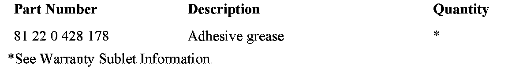
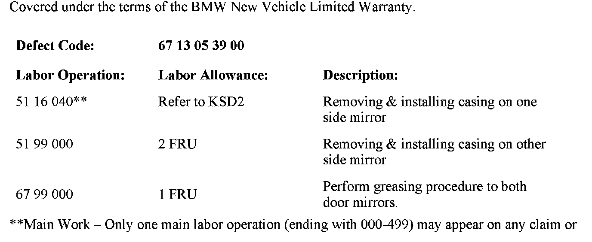
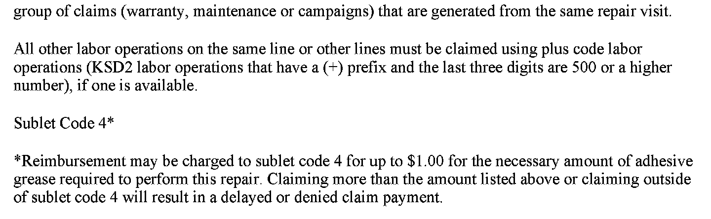
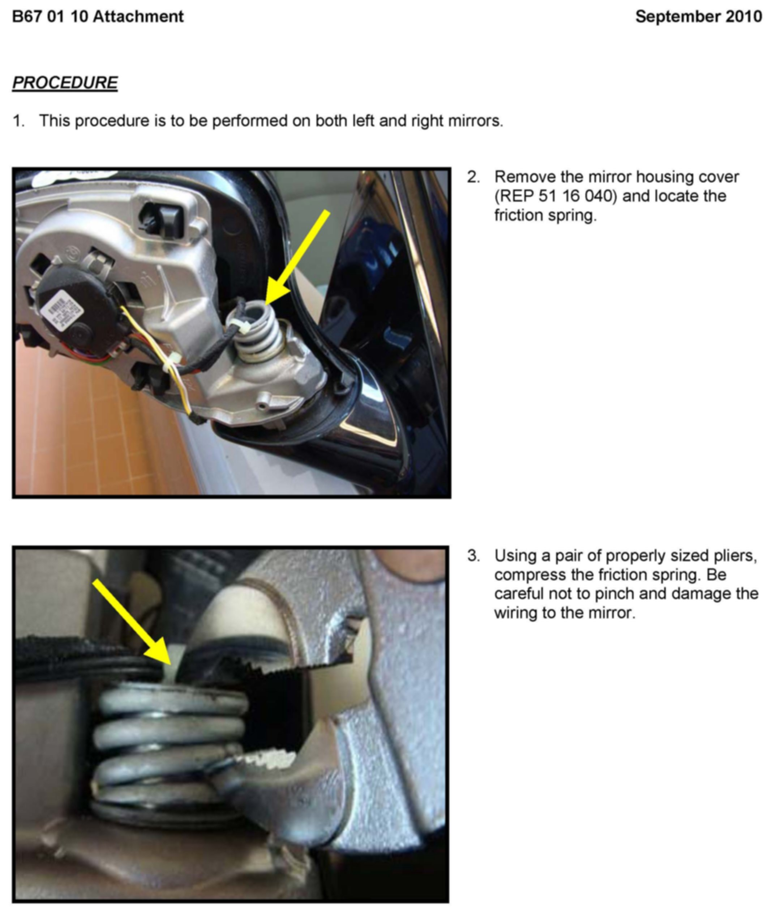
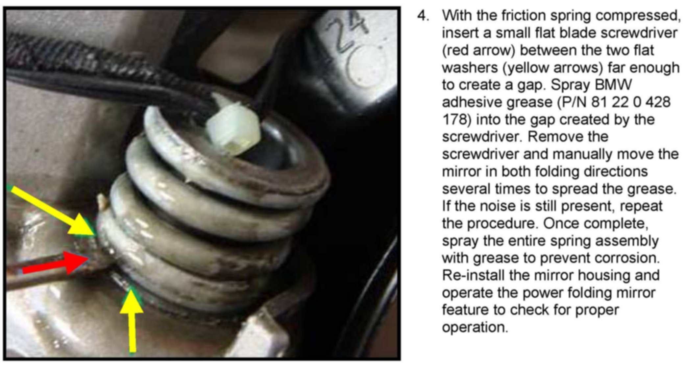

Instruments - Creaking Noise When Door Mirrors Fold
SI B67 01 10Electric Drives
September 2010
Technical Service
SUBJECT
Metallic Noise when Door Mirrors are Folding
MODEL
E82, E88 (1 Series)
E90, E91, E92, E93 (3 Series)
E85, E89 (Z4)
E83 (X3)
Vehicles produced 9/1/08 through 5/28/10.
SITUATION
Customer complains of metallic creaking noise when the door mirrors are folding.
CAUSE
Lubricating grease is lacking between the two metal mating surfaces of the mirror tension spring.
PROCEDURE
Refer to attachment B670110.

PARTS INFORMATION


WARRANTY INFORMATION
ATTACHMENTS


B670110 Procedure